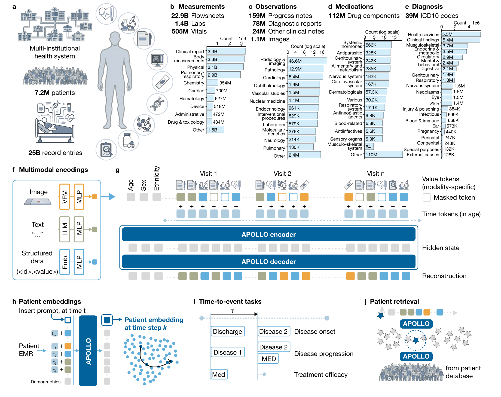

APOLLO
A multimodal and temporal foundation model for virtual patient representations at healthcare system scale
全院级多模态 EHR / 虚拟患者表示v2论文称预训练与评估代码将在正式发表后面向学术研究用途提供；截至本笔记生成时未检索到明确公开代码/权重。
| 基础信息 | APOLLO 将结构化数据、临床文本和医学图像按时间整合为统一患者向量，用于跨疾病、治疗和医院运营场景的预测与检索。 |
|---|---|
| 数据集 | MGB-7M 来自 Mass General Brigham 多机构医疗系统，包含 7,155,044 名患者、25,296,943,893 个医疗事件、33 年纵向记录、17 家机构/附属诊所，以及 1.4M 留出测试患者。 |
| 方法学 | 模型把结构化事件、临床文本和医学图像分别编码为 token/embedding，经模态投影和年龄/时间编码输入 12 层 Transformer；预训练采用多模态 masked modeling，推理时用 ICD-10 mask prompt 的隐藏状态作为患者表示。 |
| 开源 | 论文称预训练与评估代码将在正式发表后面向学术研究用途提供；截至本笔记生成时未检索到明确公开代码/权重。 |

APOLLO详细算法示意EHR tokens -> multimodal masked modeling -> patient embeddings
1. 数据汇聚与标准化
多机构真实世界 EHR17 家机构/附属诊所、33 年记录，覆盖住院、门诊、专科和教学医院。
结构化词表诊断映射 ICD-10，药物映射 RxNorm ingredient，实验室/生命体征/flowsheet 参考 LOINC。
文本与图像进展记录、诊断报告、病理/血液图像等作为非结构化事件进入统一时间轴。
2. 模态专用编码器
Text临床文本使用 GatorTron-base 编码，长文本分块后聚合为 note-level embedding。
Image病理 WSI 使用 TITAN，血涂片使用 DinoBloom，部分显微/大体图像使用 CONCHv1.5。
Structured离散结构化 token 采用可学习 embedding；数值检查经对数变换和分箱。
3. 时序 Transformer 预训练
Backbone12 个 Transformer block，hidden size 768，12 个 attention heads，最大序列长度 1,536。
时间编码以患者年龄/时间作为 learnable time MLP 编码，替代传统位置编码。
Masked modeling随机 mask 30% 事件；结构化 token 做分类重建，非结构化 embedding 做 MSE + cosine 重建。
4. 患者表示与下游头
Patient vector推理时在最后一次就诊时间加入 ICD-10 mask token，取其上下文隐藏状态作为患者 embedding。
Risk prediction固定 APOLLO embedding，经 PCA 到 50 维后训练 Cox proportional hazards 模型。
Patient retrieval以 cosine distance 建立相似患者检索索引，支持结构化、文本和图像查询。
z_t = modality_adapter(event_t) + time_MLP(age_t)
L = L_structured_cross_entropy + L_unstructured_MSE_cosine
patient embedding = hidden state of appended ICD-10 mask token
7.15M patients25.3B events28 modalities12 specialties322 tasks1.4M test patients
方法要点：APOLLO 的价值不在单一疾病模型，而在把跨科室、跨模态、跨时间的完整病程压缩成可检索、可线性探测、可解释的患者状态向量；这使其可能服务于风险预测、队列发现、临床试验匹配和医院运营管理，但仍需要外部、多中心、前瞻性和部署级验证。
数据集细节
- MGB-7M 包含 22.94B flowsheet events、1.44B laboratory tests、505.19M vital signs、158.68M progress notes、77.98M diagnostic reports 与 1.16M images。
- 论文称数据覆盖 28 个不同医疗模态和 12 个主要医学专科，诊断、药物和疾病编码覆盖 ICD、ATC 等主要分类体系。
- 患者规模为 7,155,044；性别分布大致平衡，论文正文报告男性 3,915,625、女性 3,236,747。
- 评估使用留出测试集 1.4M 患者；检索实验构建以 2025-01-01 为时间点的全测试集患者搜索索引。
- 数据因机构政策、知识产权与隐私限制不能直接公开共享；论文称院内采集/整理数据需逐案评估并签署材料转移协议。
方法学细节
- 结构化数据被离散化为事件 token：ICD diagnosis、RxNorm ingredient、LOINC 类实验室/生命体征/flowsheet 分箱或分类 token。
- 非结构化事件先由预训练专用编码器压缩为固定维度 embedding，再通过轻量 projector 投影到统一 768 维潜空间。
- 患者记录被组织为时间顺序事件序列，并加上 demographic tokens、CLS token 和基于年龄/时间的 learnable time encoding。
- 预训练目标为多模态 masked modeling：结构化 token 在语义相关词表内分类重建，文本/图像 embedding 则以 MSE 与 cosine distance 回归原始嵌入。
- 训练细节包括 AdamW、gradient clipping、cosine warmup schedule、最多 30,000 iterations、每 1,000 iterations 在验证集评估一次，并在 8 张 NVIDIA A100-80GB GPU 上分布式训练。
验证结果细节
- 总验证任务数为 322：95 个新发疾病风险、78 个疾病进展、59 个治疗反应、17 个治疗相关不良事件、12 个医院运营终点，以及 61 个相似患者检索队列。
- 新发疾病预测中，APOLLO 在 74/95 个疾病任务上显著优于 age-sex Cox baseline；例如 1 年全因死亡 AUROC 0.92，3 年心衰预测从 0.77 提升到 0.88。
- 疾病进展任务中，APOLLO 在 53/78 个任务上显著优于 baseline；例如高血压到心衰 5 年风险从 0.75 提升到 0.86，黑色素瘤 3 年生存从 0.71 提升到 0.87。
- 治疗反应任务中，APOLLO 在 30/59 个任务上显著优于 baseline；HER2 阳性乳腺癌 trastuzumab 生存预测从 0.66 提升到 0.93。
- 不良事件任务中，APOLLO 在 12/17 个任务上提升风险分层；NSAID 后急性肾损伤和 GI 出血均从 0.80 提升到 0.91 AUROC。
- 医院运营任务覆盖 30 天再入院、住院时长超过 7 天和 ED 后 7 天急性护理终点；12 个任务中 9 个显著提升。
- 消融显示多模态与预训练均有贡献：在 28 个肿瘤进展任务上，完整 APOLLO mean AUROC 0.735，高于 structured-only 0.710、supervised 0.626、last-progress-note 0.615 和 age-sex 0.619。
APOLLO 论文概括总结
这篇论文把“虚拟患者”从概念推进到医疗系统级基础模型实验：APOLLO 通过多模态时序 masked modeling 学习全病程表示，并用大量时间到事件任务、检索任务和解释性分析展示其通用性。论文的强项是数据规模、任务覆盖和评估体系完整；主要边界是数据来自单一大型医疗系统、代码/权重尚未公开、临床部署与跨系统泛化仍待独立验证。
研究定位全院级 EHR 基础模型，将结构化、文本和图像事件统一为动态患者表示。
技术贡献模态适配器 + 年龄/时间编码 + Transformer 时序融合 + 多模态 masked reconstruction。
验证体系覆盖预测、治疗反应、不良事件、运营和检索的 322 个任务，且包含消融与校准分析。
临床意义把 EHR 从静态记录库转成可计算的患者状态空间，但尚需开放复现和前瞻性临床验证。